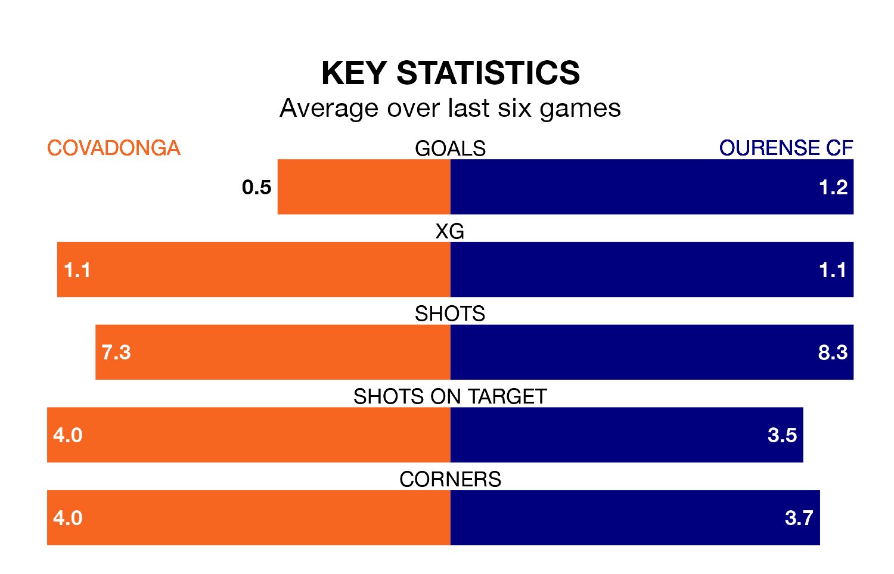

Mid-season relegation candidates Covadonga face a challenge against high-flying Ourense CF at the Estadio Juan Antonio A. Rabanal on Sunday.
Covadonga are 17th in the Segunda División RFEF Group 1 table, and have picked up three wins and six draws in their 20 games to date.
Ourense, meanwhile, are top of the standings with 42 points, having won 12 and drawn six.
With 17 goals in 20 games so far this season, Covadonga are scoring at below the league average rate with 0.8 goals per game. And they are conceding more than average, letting in 39 goals at a rate of 2.0 per game.
Ourense, meanwhile, are above average scorers, with 1.3 goals per game, compared to a league average of 1.1. They have conceded 0.5 goals per game.
The home team are in disappointing form in Segunda División RFEF Group 1, with one win and two draws from their last six games.
With three wins and three draws over that period, the visitors' form is much better – they have taken 12 points from 18, compared to Covadonga's five.
Covadonga's last match was on January 27, a 2-0 loss against SD Compostela.
Ourense beat Arandina CF 2-0 last time out, on Sunday.
Updated: 09:21 (UTC), 30/01/24